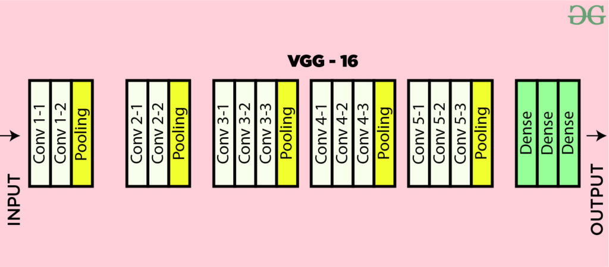

Workflow
-
Data Preparation
- Load and preprocess data: Load images from directories corresponding to traffic signs. Images are resized to a consistent format (100x100 pixels) and labeled according to their directories.
- Data cleaning and mapping: Filter out data labeled as 'unknown', remap class labels to new IDs for a streamlined dataset, and separate images based on presence or absence of direction-related labels (e.g., right, left, straight).
Raw data

-
Data Preprocessing
- Split data: Separate the images into training, validation, and test sets to ensure the model is trained on diverse samples and validated on unseen data.
- Normalize images: Convert image pixel values from integers to floats and scale them between 0 and 1 for neural network processing.
- Augmentation:
- Directional Images:
- Apply basic augmentation: Rotate images by ±20 degrees to simulate slight variations in orientation. This helps prevent overfitting while preserving the intended direction of the traffic sign. For example, a slight rotation ensures that left remains left, right remains right, and straight remains straight without significant distortion.
Images with direction

- No Directional Images:
- Apply enhanced augmentation: Rotate images by ±40 degrees to introduce more variability in orientation. Since these images do not have explicit directional cues, a wider range of rotation helps the model generalize better to unseen data. The increased rotation angle ensures that features of the traffic signs are captured from various perspectives, enhancing the model's robustness.
Images without direction

- Directional Images:
-
Model Building
- CNN architecture setup: Construct a VGG-16 inspired model with multiple convolutional layers, max pooling layers, and dense layers to learn hierarchical features from the traffic sign images.
- First Convolutional Block:
- Conv2D Layer: 64 filters, 3x3 kernel size, activation='relu', input shape=(100,100,3)
- Conv2D Layer: 64 filters, 3x3 kernel size, activation='relu'
- MaxPooling2D: Pool size of (2,2) and stride of 2
- Second Convolutional Block:
- Conv2D Layer: 128 filters, 3x3 kernel size, activation='relu'
- Conv2D Layer: 128 filters, 3x3 kernel size, activation='relu'
- MaxPooling2D: Pool size of (2,2) and stride of 2
- Fourth Convolutional Block:
- Conv2D Layer: 512 filters, 3x3 kernel size, activation='relu'
- Conv2D Layer: 512 filters, 3x3 kernel size, activation='relu'
- Conv2D Layer: 512 filters, 3x3 kernel size, activation='relu'
- MaxPooling2D: Pool size of (2,2) and stride of 2
- Fifth Convolutional Block:
- Conv2D Layer: 512 filters, 3x3 kernel size, activation='relu'
- Conv2D Layer: 512 filters, 3x3 kernel size, activation='relu'
- Fully Connected Layers:
- Dense Layer: 4096 units, activation='relu'
- Dense Layer: 4096 units, activation='relu'
- Dense Layer: 47 units (number of traffic sign classes), activation='softmax'
- Optimizer: Adam optimizer with a learning rate of 0.001.
- Loss Function: Categorical crossentropy.
- Metrics: Accuracy.
Model Architecture:
The model architecture is inspired by VGG-16, renowned for its simplicity and effectiveness in image recognition tasks. It consists of several convolutional layers designed to extract increasingly complex features from input images, followed by pooling layers to reduce feature map dimensionality.
Training Specifications:
This architecture effectively captures the hierarchical pattern in the data, crucial for accurate classification of traffic signs.
VGG-16 Architecture
 -
Model Training
- Train Model: Train the constructed VGG-16 inspired model by fitting it to the training data. Utilize callbacks such as early stopping to prevent overfitting and optimize model performance. During training, validate the model on a separate validation dataset to monitor performance improvements and adjust hyperparameters as necessary to enhance generalization.
- Visualization: Visualize the training and validation process by plotting the loss and accuracy metrics over epochs. These visualizations provide insights into the model's learning dynamics, allowing for the assessment of convergence, overfitting, or underfitting. Monitoring the training and validation curves facilitates informed decisions regarding model optimization strategies, such as adjusting learning rates, incorporating regularization techniques, or modifying network architecture.
-
Evaluation and Prediction
- Test model: Use the trained model to predict traffic sign classes on the test dataset. Evaluate model performance using classification metrics such as accuracy, precision, and recall.
- Single image prediction: Demonstrate the model's predictive capabilities by loading and preprocessing individual images, then using the model to predict their classes.
-
Save and Reuse
- Save model and PCA components: Store the trained model and PCA components (if used) for future reuse without needing to retrain.
- Load model for predictions: Provide functionality to load the model and use it for ongoing or batch predictions as required.
-
Deployment
- Integrate model into an application: Integrate the trained model into a web-based application or service that allows users to upload traffic sign images and receive classifications in real time.
- User interaction: Design a user-friendly interface where users can easily interact with the model, upload images, and view predictions.